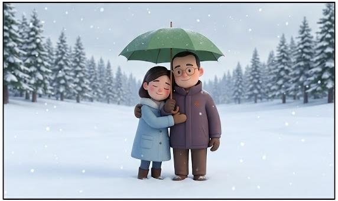
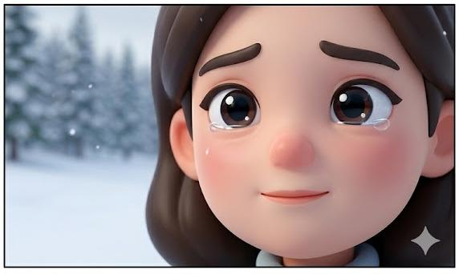

Transform the provided couple photo into a vertical three-panel romantic snow scene, with each panel having an aspect ratio of 9:16. The male protagonist uses attached photo 1 (male's face); the female protagonist uses attached photo 2 (female's face). Pan 1: Close-up of the male protagonist's right profile, framed on the left side of the generated image. He (Photo 1) looks directly into the distance, conveying an atmosphere of longing and cherishing. Pan 2:The couple is situated in the center of a vast snowfield, surrounded by a dense pine forest, with a soft, overcast sky. The composition is a distant view, showing the male and female protagonists (Photo 1 and Photo 2) embracing from behind, sharing an umbrella and leaning against each other in the winter landscape. Pan 3: Close-up of the female protagonist's (Photo 2) full face, conveying the strongest emotions. Her eyes are slightly moist, hiding memories and unspoken feelings. 把我的Q偶放進去